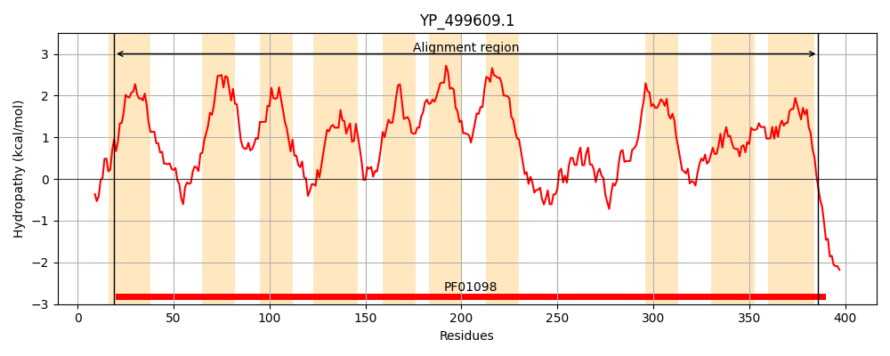
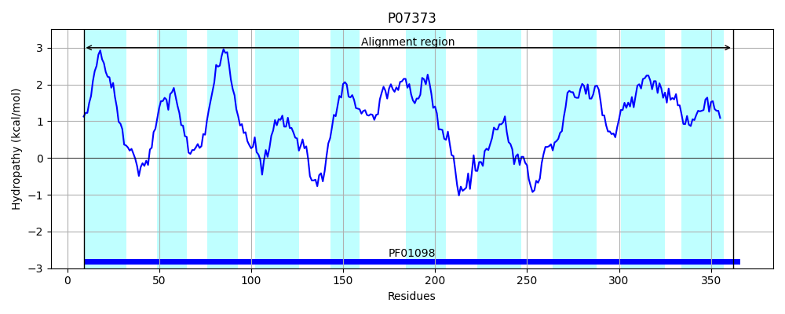
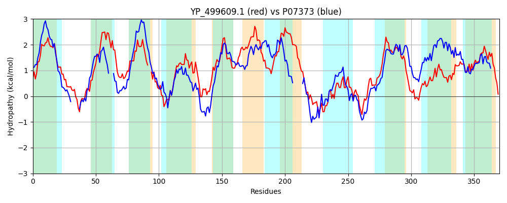

Hit Accession: P07373
Hit TCID: 2.A.103.1.3
Hit Description: gnl|BL_ORD_ID|8418 gnl|TC-DB|P07373|2.A.103.1.3 STAGE V SPORULATION PROTEIN E - Bacillus subtilis.
Mach Len: 370
e:0.000000
Query TMS Count : 10
Hit TMS Count: 10
TMS-Overlap Score: 5.350000
Predicted Substrates:CHEBI:61496;alpha-D-FucNAc4-(1->4)-beta-D-ManNAcA-(1->4)-D-GlcNAc-undecaprenyl diphosphate(3-)
BLAST Alignment:
Score: 518 , Bit scores: 204 bits, E-value: 4.2e-62, Alignment length: 370, Percentage identity: 34
Query: 19 DYPLLVTYIVLSLIGLVMVYSASMVPATKGTLTGGIDVPGTYFYNRQLAYVIMSFIIVFFIAFLMNVKLLSNIKVQKGMIITIVSLLLLTLV--IGKDINGSKSWINLGFMNLQASELLKIAIILYIPFMISKKMPRVLSKPKLILSPIVLALGCTFLVFLQKDVGQTLLILIILVAIIFYSGIGVNKVLRFGIPAVLGFLVVFVIALMAGWLPSYLTARFSTLTDPFQFESGTGYHISNSLLAIGNGGVFGKGLGNSAMKLGYLPEPHTDFIFAIICEELGLIGGLLVITLEFFIVYRAFQFANKTSSYFYKLVCVGIATYFGSQTFVNIGGISATIPLTGVPLPFISFGGSSMISLSIAMGLLLIVGK 386
D L++ ++L IGL+MVYSAS V A +F RQL + + I +FFI MNV + K +++ LL+L L+ +G NGS+SWI +G ++Q SE +K+A+I ++ +S+K + S + + + + ++ Q D+G +++ + +IF +G + + G+ + GF+ + + A Y R ++ +P++ G+G+ I SL A+G GG+FG GLG S K YLPEP TDFIFAI+ EELG IGG L++ L +++R + A + V VGI + Q +NIG ++ IP+TG+ LPF+S+GGSS+ + +A+G+LL V +
Sbjct: 9 DLLLVIITLLLLTIGLIMVYSASAVWADYKF------DDSFFFAKRQLLFAGIGVIAMFFI---MNVDYWTWRTWSKLLMVICFFLLVLVLIPGVGMVRNGSRSWIGVGAFSIQPSEFMKLAMIAFLAKFLSEKQKNITSFRRGFVPALGIVFSAFLIIMCQPDLGTGTVMVGTCIVMIFVAGARIAHFVFLGLIGLSGFVGLVLSA-------PYRIKRITSYLNPWEDPLGSGFQIIQSLYAVGPGGLFGMGLGQSRQKFFYLPEPQTDFIFAILSEELGFIGGTLILLLFSVLLWRGIRIALGAPDLYGSFVAVGIISMIAIQVMINIGVVTGLIPVTGITLPFLSYGGSSLTLMLMAVGVLLNVSR 362 | Protein Hydropathy Plots: |
|---|
|  |  |
Pairwise Alignment-Hydropathy Plot:
|
|---|
|  |